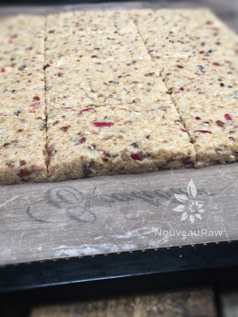
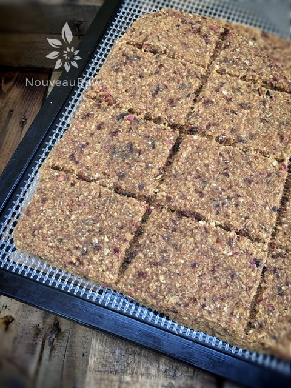

Apple Oat Bread
This bread didn’t start out trying to be bread. Nope, it began as a humble cracker—because that’s what I was craving. But as life (and the food processor) would have it, the ingredients had other plans. Turns out, what I really needed wasn’t a crisp snap but a warm, hearty bite of something more comforting. Isn’t that how life works sometimes? You think you want one thing, but something even better sneaks up on you.
And here we are: Apple Oat Bread.
What I love about this bread is how it stands tall and proud all on its own. No need for bells, whistles, or fancy spreads (though they’re never unwelcome). The oats give it a wholesome, satisfying bite, while the apples and raisins bring just the right touch of natural sweetness—no added sugar required. Here’s the key: use good apples. Ripe, juicy, flavorful ones. This is not the place to offload those tired, mealy apples hiding in the back of the fridge. If you use sad apples, you get sad bread. Let’s not do that.
Now, I know I said it doesn’t need anything else, but I’d be lying if I didn’t tell you it tastes extra fabulous with a swipe of Blueberry Mint Chia Jam. Not only does it add a pop of flavor, but the color? Total showstopper. Like a fancy hat on a cozy outfit.
This bread isn’t just tasty—it’s sneakily healthy. It packs omega-3s, fiber, selenium (your thyroid will thank you), protein, magnesium, and zinc. Basically, a multivitamin disguised as a loaf. My goal is for you to enjoy every bite, but hey… I’m slipping in some nutrients while you’re not looking. And you thought I was all sweet and innocent. Hehe.
I hope you love this recipe as much as I do. Bake it, share it, slather it with something colorful, or just enjoy it warm from the dehydrator (or oven) with your favorite mug in hand.
Blessings and belly hugs,
amie sue
- 1/4 cup gluten-free, rolled oats, soaked & dehydrated
- 1/2 cup ground flax seeds
- 1 tsp Ceylon ground cinnamon
- 1/4 tsp Himalayan pink salt
- 2 organic apples peeled and cored
- 2 Tbsp lemon juice (juice of half a lemon)
- 1/3 cup raisins (optional)
Preparation:
- In a food processor fitted with an “S” blade, combine the oats, ground flax, cinnamon, and salt. Process until the oats are a powder.
- Add the apples and lemon juice to the food processor and blend until creamy.
- Add the raisins and blend till mixed well.
- Allow the batter to “rest’ for about 10 minutes so the flax meal can help absorb any liquid.
- Spread onto a non-stick sheet that comes with the dehydrator.
- I made mine on one tray, making it nice and thick (roughly 1/4″ thick) and 9 x 9″ square.
- Score into whatever shape you desire.
- Dehydrate at 145 degrees (F) for 1 hour, then reduce to 115 degrees (F) for about 24 hours, flipping it at the half mark onto the mesh screen. This won’t crisp up, so be aware.
- Store in a glass container in the fridge to give it its maximum shelf life.
The Institute of Culinary Ingredients™
- What is Himalayan pink salt, and does it matter? Click (here) to read more about it.
- Are oats gluten-free? Yes, read more about that (here).
- Are oats raw? Yes, they can be found. Click (here) to learn more.
- Do I need to soak and dehydrate oats? Not required but recommended. Click (here) to see why.
- Learn how to grind your own flaxseeds for ultimate freshness and nutrition. Click (here).
Culinary Explanations:
- Why do I start the dehydrator at 145 degrees (F)? Click (here) to learn the reason behind this.
- When working with fresh ingredients, it is essential to taste test as you build a recipe. Learn why (here).
- Don’t own a dehydrator? Learn how to use your oven (here). I do, however, honestly believe that it is a worthwhile investment. Click (here) to learn what I use.
I took a picture of it just before it went into the dehydrator.
I wanted to show you how thick it looked.

And here it is after drying…

© AmieSue.com